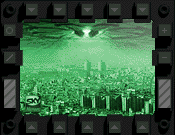

NASA R0X YEWR SPUTNIK
Get to know our recent additions to the staff...
That teacher that got blown up in that phlaming fire on the challenger

NASA gn0ws aliens exist.. here's some pictures I hacked out of NASA's hard drive:
the manifesto of defcon squared
hi, i'm your host, defcon squared. you're probably wondering just what this page is about.
well as some of you may know, i'm a little bit of an underground kiddie. so, this page is
dedicated to the digital underground, and it's protection, and survival. i'm not going to
sit here and rant on about how protecting porn is important, because frankly, i don't think
it is. what is important, is that the free-flow of ideas don't stop.
let me present a situation to you. you live in a world, where the better you get at
something, the more negatively you're treated. the worse you do, the better you're treated.
there are things that you are allowed to know, and talk about. things you will get killed
for knowing. ideas that are good to believe in. other ideas that you are persecuted for.
imagine that the people that were leading you, that you believed in, and trusted,
were hiding things, important things, from you. imagine that you couldn't even have a
conversation with someone, without fear of repricussion.
if you doubt any of the things i have just stated as not true, you are truely blind. the
best representation of this i can give to you is your presidents "clipper chip" initiative.
this is the most obvious attempt at total informational control that anyone could possibly
attempt for. not only is the idea in any form flawed, it's also intensly corrupt. consider
this, if the code for the chip gets cracked, and it will be... trust me, the United States
would have no encryption whatsoever. think about that. no protection at all, of any kind,
for data. this is just the one aspect, think about this; your government will be able to
look at any, and all data used with this chip; they will have all the keys, and codes that
go with this. if this alone doesn't set off any alarm bells for you, again, you need to
wake up.
so, what the fuck to do? fight against bullshit in whatever capacity you can. if it means
you trade pirated software, by all means do so. if it means writing your congressman, do
it. if it means hacking the shit out of nasa.gov, 0wn the fuckin thing. but never forget,
always keep your voice, it's one of the few posessions you truely own, don't let it go to
waste, and never let it get taken away from you.
get heard.
- defcon squared "I believe truer words were never spoken... thanks webba" -- \\StOrM\\
Thanks to all the sponsors who made Apollo 69 possible:
EWAN
webba
hyena
oxygen
S
W
_eci
ac1dx
EagleSoft
_Power
Coldboot
bleach
crasher3
DunWan
grem
i
jestah
JMnemonic
l0cke_
Marvin66
Meat
methos
myname
Space
syanide
theif
Chame1eon
Daxxy
KrAzY
Raskah
Selpy
Twang
TCB
oOaBySsOo
Wolenczak
Watchman
Entropi
matti
Kestral
Simpatico
Zuez
BlackDragon
VicVixvi
SuperTaz
Kaitlynn
Vick
Studded
Mysidia
dalvenjah